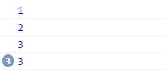

var fuc = [1,2,3];
for(var i in fuc){
setTimeout(function(){console.log("set:"+fuc[i])},0);
console.log(fuc[i]);
}

说明：
虽然setTimeout函数在每次循环的开始就调用了，但是却被放到循环结束才执行，循环结束，i=3,接连打印了3次3。
这里涉及到javascript单线程执行的问题：javascript在浏览器中是单线程执行的，必须在完成当前任务后才执行队列中的下一个任务。
另外，对于javascript还维护着一个setTimeout队列，未执行的setTimeout任务就按出现的顺序放到setTimeout队列，等待普通的任务队列中的任务执行完才开始按顺序执行积累在setTimeout中的任务。
所以在这个问题里，会先打印1 2 3，而将setTimeout任务放到setTimeout任务队列，等循环中的打印任务执行完了，才开始执行setTimeout队列中的函数，所以在最后会接着打印3次3。
由此，可以知道虽然设置为0秒后执行任务，实际上是大于0秒才执行的。可是这有什么用呢？
用处就在于我们可以改变任务的执行顺序！因为浏览器会在执行完当前任务队列中的任务，再执行setTimeout队列中积累的的任务。
通过设置任务在延迟到0s后执行，就能改变任务执行的先后顺序，延迟该任务发生，使之异步执行。